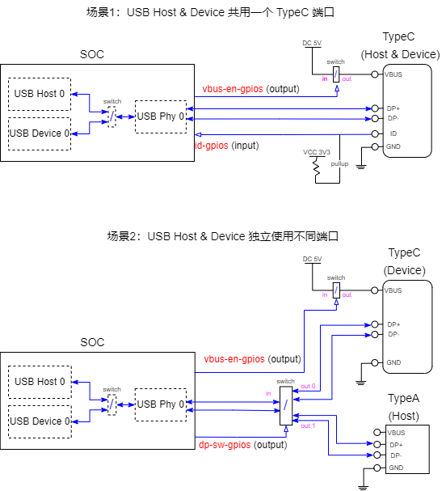

USB OTG 配置
USB Host 0 和 USB Device 0 共享 1 路 phy。要么同时只能启用其中一种功能，要么启用 USB OTG 功能通过
id 管脚的值来动态切换对外功能。
-
Linux Kernel Kconfig 文件中使能相应 OTG Driver：
> Device Drivers > USB support [*] OTG support [*] Support for ArtInChip on-chip OTG Switch -
DTS 文件中配置相应 OTG Device:
otg: usb-otg { compatible = "artinchip,aic-otg-v2.0"; }; &otg { otg-mode = "auto"; // = auto/host/device id-gpios = <&gpio_f 15 GPIO_ACTIVE_HIGH>; vbus-en-gpios = <&gpio_a 7 GPIO_ACTIVE_HIGH>; dp-sw-gpios = <&gpio_e 14 GPIO_ACTIVE_LOW>; status = "okay"; };
OTG 模式配置
Auto 模式 或者 Force
模式 模式 ：-
Auto 模式。根据id管脚的电平来决定当前 OTG 端口工作模式为Host/Device。通常情况下
id = low对应Host模式，id = high对应Device模式。 -
Force 模式。手工配置工作模式，通过配置/sys/devices/platform/soc/soc\:usb-otg/otg_mode文件节点的值来改变当前 OTG 端口的工作模式，host对应Host模式，device对应Device模式。另外auto对应Auto模式，需要使用id管脚来进行判断。
otg 节点的不同配置：| Mode | DTS otg-mode 属性 |
DTS xxx-gpios 属性 |
运行时 Host / Device 切换方法 |
|---|---|---|---|
| Auto | otg-mode = "auto"; (如果没有配置
otg-mode 属性, 默认也是 Auto 模式) |
id-gpios 属性必须配置。 vbus-en-gpios
和 dp-sw-gpios 属性根据硬件配置选配。 |
OTG 驱动根据 id-gpios 管脚的电平变化 自动切换 USB 工作模式为
Host / Device。 |
| Force | otg-mode = "device"; 或者 otg-mode =
"host"; |
id-gpios 属性不需要配置。 vbus-en-gpios
和 dp-sw-gpios 属性根据硬件配置选配。 |
需要配置文件节点来手工切换： echo devices >
/sys/devices/platform/soc/soc\:usb-otg/otg_mode 或者
echo host >
/sys/devices/platform/soc/soc\:usb-otg/otg_mode |
OTG 相关 GPIO
从上面配置可以看到和 OTG 功能相关的 GPIO 管脚有 3 个：
-
id-gpios。用来检测当前插入的是不是 OTG 线，如果为 OTG 线则需要把本机切换到 USB Host 模式，否则本机切换到 USB Device 模式。该管脚在Auto 模式模式下是必须配置的，如果缺少该管脚 OTG 只能工作在Force模式手工进行切换。 -
vbus-en-gpios。该管脚是用来控制 VBUS 的 5V 输出的，通常情况下：切换到 USB Host 模式时需要使能本机端的 VBUS 5V 输出给对端 Device 供电，切换到 USB Device 模式时需要关闭本机端的 VBUS 5V 输出转而对端 Host 的供电。（实际使用上来说，不论本端是 Host/Device 模式，也可以在 VBUS 上一直供电 5V 两边 VBUS 无压差则无漏电，这种情况下vbus-en-gpios无需配置。） -
dp-sw-gpios。该管脚是在 OTG 外出两个独立 Host、Device 端口时，用来控制外部 Switch 的。非该模式时，dp-sw-gpios无需配置。
3 个 GPIO 管脚的具体使用场景如上图所示，用户根据自己的使用场景来选择配置哪些 GPIO。每个 GPIO 的 输入输出正反电平有效，可以通过 DTS 中的 GPIO_ACTIVE_HIGH 和
GPIO_ACTIVE_LOW 来配置：
| GPIO Name | Direction | GPIO_ACTIVE_HIGH | GPIO_ACTIVE_LOW |
|---|---|---|---|
id-gpios |
input |
输入低电平 = Host， 输入高电平 = Device |
输入低电平 = Device， 输入高电平 = Host |
vbus-en-gpios |
output |
Host (VBUS on) = 输出高电平 Device (VBUS off) = 输出低电平 |
Host (VBUS on) = 输出低电平 Device (VBUS off) = 输出高电平 |
dp-sw-gpios |
output |
Host = 输出高电平 Device = 输出低电平 |
Host = 低电平 Device = 高电平 |